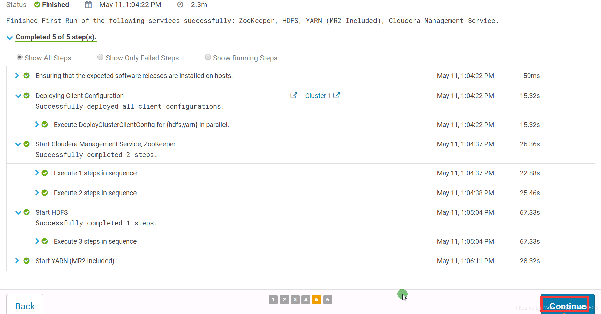

CDH下载 cloudera-manager-centos7-cm5.16.1_x86_64.tar.gz CDH-5.16.1-1.cdh5.16.1.p0.3-el7.parcel CDH-5.16.1-1.cdh5.16.1.p0.3-el7.parcel.sha1 manifest.json
配置hostname及hosts 准备三台服务器分别为hadoop001、hadoop002、hadoop003（每台的最低配 2核8G内存）
1 2 3 4 5 6 7 8 9 10 11 12 13 14 15 16 17 18 19 20 # 配置第一台服务器 hostname hadoop001 echo "hadoop001" > /etc/hostname echo "192.168.1.11 hadoop001">> /etc/hosts echo "192.168.1.12 hadoop002">> /etc/hosts echo "192.168.1.13 hadoop003">> /etc/hosts # 配置第二台服务器 hostname hadoop002 echo "hadoop002" > /etc/hostname echo "192.168.1.11 hadoop001">> /etc/hosts echo "192.168.1.12 hadoop002">> /etc/hosts echo "192.168.1.13 hadoop003">> /etc/hosts # 配置第三台服务器 hostname hadoop003 echo "hadoop003" > /etc/hostname echo "192.168.1.11 hadoop001">> /etc/hosts echo "192.168.1.12 hadoop002">> /etc/hosts echo "192.168.1.13 hadoop003">> /etc/hosts
关闭所有节点的防火火墙及清空规则 1 2 3 systemctl stop firewalld systemctl disable firewalld iptables -F
关闭所有节点的selinux 1 2 3 4 vi /etc/selinux/config 将 SELINUX=enforcing 改为 SELINUX=disabled 设置后需要重启才能生生效
设置所有节点的时区一一致及时钟同步 设置时区 1 2 3 4 5 6 7 8 9 10 date # 查看系统时间 timedatectl # 查看当前系统使用的时区 timedatectl list-timezones # 查看所有时区 timedatectl set-timezone Asia/Shanghai #设置当前系统时区为亚洲上海时区 #注意所有节点都需要设置，并且时区保持一直
时间同步 1 2 3 4 5 6 7 8 9 10 11 12 13 14 15 16 17 18 19 20 21 22 23 24 25 26 27 28 29 30 31 32 33 34 # 所有节点安装ntp，所有节点都需要安装 yum install -y ntp # 选取hadoop001为ntp的主节点，修改hadoop001节点上的 /etc/ntp.conf 配置文件 vi /etc/ntp.conf # 在配置文件的顶部配置 （logfile /var/log/ntp.log）的位置下，添加如下配置 #文件内容 server 0.asia.pool.ntp.org server 1.asia.pool.ntp.org server 2.asia.pool.ntp.org server 3.asia.pool.ntp.org #当外部时间不可⽤时，可使⽤本地硬件时间 server 127.127.1.0 iburst local clock #允许哪些⽹段的机器来同步时间，即你从节点所在网段 #表示 192.168.1.0网段下的所有机器都可以来同步，这里IP需要根据自己实际的IP网段进行修改 restrict 192.168.1.0 mask 255.255.255.0 nomodify notrap #开启hadoop001上的 ntpd及查看状态 systemctl start ntpd systemctl enable ntpd systemctl status ntpd #验证 ntpq -p #其他的从节点停⽌禁⽤ntpd服务，并同步hadoop001上的时间，即在hadoop002、hadoop003中执行以下命令 systemctl stop ntpd systemctl disable ntpd /usr/sbin/ntpdate hadoop001 #每天凌晨同步hadoop001节点时间，在下面命令打开的文件中添加文件内容（打开文件后，请使用vi命令添加修改保存） crontab -e # 文件内容 00 00 * * * /usr/sbin/ntpdate hadoop001
部署集群的JDK jdk-8u45-linux-x64.tar.gz 下载
1 2 3 4 5 6 7 8 # 在所有节点上执行以下命令 mkdir /usr/java tar -zxvf jdk-8u45-linux-x64.gz -C /usr/java/ chown -R root:root /usr/java/jdk1.8.0_45 echo 'export JAVA_HOME=/usr/java/jdk1.8.0_45' >> /etc/profile echo 'export PATH=${JAVA_HOME}/bin:${PATH}' >> /etc/profile source /etc/profile which java
离线部署MySQL5.7 MySQL5.7离线部署
CDH部署 创建CDH的元数据库和⽤户、amon服务的数据库及⽤户 1 2 3 4 5 6 7 # 登录mysql 客户端，执行以下mysql命令 # 创建数据库，并创建用户及授权访问 create database cmf DEFAULT CHARACTER SET utf8; create database amon DEFAULT CHARACTER SET utf8; grant all on cmf.* TO 'cmf'@'%' IDENTIFIED BY '123456'; grant all on amon.* TO 'amon'@'%' IDENTIFIED BY '123456'; flush privileges;
hadoop001节点部署mysql jdbc jar 1 2 3 mkdir -p /usr/share/java/ # 注意一定要将版本号去掉 cp mysql-connector-java-5.1.47.jar /usr/share/java/mysql-connector-java.jar
离线部署cm server及agent 我这里使用hadoop001做为主节点，运行CM Server
1 2 3 4 5 6 7 8 9 10 11 12 13 14 15 16 17 18 19 20 21 22 # 所有节点，创建⽬录及解压 mkdir /opt/cloudera-manager tar -zxvf cloudera-manager-centos7-cm5.16.1_x86_64.tar.gz -C /opt/cloudera-manager/ # 所有节点修改agent的配置，指向server的节点hadoop001 sed -i "s/server_host=localhost/server_host=hadoop001/g" /opt/cloudera-manager/cm-5.16.1/etc/cloudera-scm-agent/config.ini # 主节点修改server的配置: vi /opt/cloudera-manager/cm-5.16.1/etc/cloudera-scm-server/db.properties # 文件内容 com.cloudera.cmf.db.type=mysql com.cloudera.cmf.db.host=hadoop001 com.cloudera.cmf.db.name=cmf com.cloudera.cmf.db.user=cmf com.cloudera.cmf.db.password=123456 com.cloudera.cmf.db.setupType=EXTERNAL # 所有节点，创建⽤户 useradd --system --home=/opt/cloudera-manager/cm-5.16.1/run/cloudera-scm-server/ --no-create-home --shell=/bin/false --comment "Cloudera SCM User" cloudera-scm # 所有节点，⽬录修改⽤户及⽤户组 chown -R cloudera-scm:cloudera-scm /opt/cloudera-manager
hadoop001节点部署离线parcel源 1 2 3 4 5 6 7 8 9 10 11 12 13 14 15 # hadoop001节点部署离线parcel源 mkdir -p /opt/cloudera/parcel-repo cp CDH-5.16.1-1.cdh5.16.1.p0.3-el7.parcel /opt/cloudera/parcel-repo/ # 切记cp时，重命名去掉1，不然在部署过程CM认为如上⽂件下载未完整，会持续下载 cp CDH-5.16.1-1.cdh5.16.1.p0.3-el7.parcel.sha1 /opt/cloudera/parcel-repo/CDH-5.16.1-1.cdh5.16.1.p0.3-el7.parcel.sha cp manifest.json /opt/cloudera/parcel-repo/ # ⽬录修改⽤户及⽤户组 chown -R cloudera-scm:cloudera-scm /opt/cloudera/ # 所有节点创建软件安装⽬录、⽤户及⽤户组权限 mkdir -p /opt/cloudera/parcels chown -R cloudera-scm:cloudera-scm /opt/cloudera/
hadoop001节点启动Server 1 2 3 4 /opt/cloudera-manager/cm-5.16.1/etc/init.d/cloudera-scm-server start #阿⾥云web界⾯，设置该hadoop001节点防⽕墙放开7180端⼝ #等待1min，打开 http://hadoop001:7180 账号密码:admin/admin #假如打不开，去看server的log，根据错误仔细排查错误
启动所有节点上的agent 1 /opt/cloudera-manager/cm-5.16.1/etc/init.d/cloudera-scm-agent start
建议（非必须） 1 2 3 4 5 6 7 8 9 10 11 12 13 14 15 16 17 18 19 20 21 22 23 24 25 26 1、建议将/proc/sys/vm/swappiness设置为最大大值10。 swappiness值控制操作系统尝试交换内存的积极; swappiness=0:表示最大大限度使用用物理理内存,之后才是swap空间; swappiness=100:表示积极使用用swap分区,并且把内存上的数据及时搬迁到swap空间; 如果是混合服务器器,不不建议完全禁用用swap,可以尝试降低swappiness。 临时调整: sysctl vm.swappiness=10 永久调整: # 在 /etc/sysctl.conf 文件中添加以下配置 # Adjust swappiness value vm.swappiness=10 2、已启用用透明大大⻚页面面压缩,可能会导致重大大性能问题,建议禁用用此设置。 临时调整: echo never > /sys/kernel/mm/transparent_hugepage/defrag echo never > /sys/kernel/mm/transparent_hugepage/enabled 永久调整: # /etc/rc.d/rc.local 文件下添加以下命令 vi /etc/rc.d/rc.local # Disable transparent_hugepage echo never > /sys/kernel/mm/transparent_hugepage/defrag echo never > /sys/kernel/mm/transparent_hugepage/enabled # centos7.x系统,需要为"/etc/rc.d/rc.local"文文件赋予执行行行权限 chmod +x /etc/rc.d/rc.local
CDH配置 访问 http://hadoop001:7180/
欢迎使用用Cloudera Manager–最终用用户许可条款与条件。勾选
欢迎使用用Cloudera Manager–您想要部署哪个版本?选择Cloudera Express免费版本
感谢您选择Cloudera Manager和CDH
选择存储库
集群安装–正在安装选定Parcel 假如本地parcel离线源配置正确,则”下载”阶段瞬间完成,其余阶段视节点数与内部网网络情况决定。
检查主机正确性
自定义服务,选择部署Zookeeper、HDFS、Yarn服务
自定义⻆色分配
数据库设置
审改设置,默认即可
首次运行 
恭喜您!
主⻚